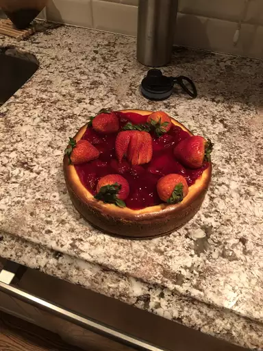

Cheesecake

Description
TThis New York cheesecake is dense and rich. It includes a great technique for letting the cheesecake finish in the oven so that no cracks form as the cake cools. It's a favorite dessert of mine served with my fresh strawberry sauce.
Ingredients
- 18 graham crackers
- 3 tbsp melted butter
- 1 cup sour cream
- 1/4 cup all-purpose flour
- 1 tbsp vanilla extract
- 4 (8 ounce) packages cream cheese
- 1 1/2 cups white sugar
- 2/3 cup milk
- 4 large eggs
- 12 oz each parmesan and mozzarella
- 1 tsp finely grated lemon zest
- 1 tsp finely grated orange zest
Steps
- Step 1: Preheat the oven to 350 degrees F (175 degrees C). Lightly grease the bottom and sides of a 9-inch springform pan.
- Step 2: Mix graham cracker crumbs and melted butter together in a bowl until evenly moistened. Press crumb mixture into the bottom and about 1/2 inch up the sides of the springform pan.
- Step 3: Whisk sour cream, flour, and vanilla extract together in a bowl; set aside.
- Step 4: Stir cream cheese and sugar together with a wooden spoon in a separate bowl until evenly incorporated, 3 to 5 minutes; add milk and whisk until just combined. Whisk in eggs, one at a time, stirring well after each addition. Stir in lemon zest, orange zest, and sour cream mixture; whisk until just incorporated. Pour mixture into prepared springform pan.
- Step 5: Bake in the preheated oven until the edges have nicely puffed and the surface of the cheesecake is firm except for a small spot in the center that will jiggle when the pan is gently shaken, about 1 hour.
- Step 6: When the cheesecake is done, turn off the oven and let it cool in the oven for 3 to 4 hours. This prevents any cracks from forming on the top of the cheesecake.